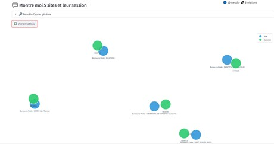
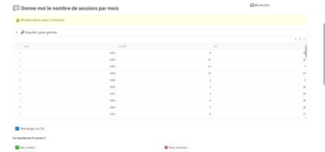

Neo4j
Explorer.
Interface en langage naturel pour interroger une base de données graphe de 30 millions de nœuds — traduction automatique en Cypher par LLM local, mémoire RAG et affichage graphe interactif
La base Neo4j du PDIA centralise toutes les données des examens du code de la route — 30 millions de nœuds, 60 millions de relations — mais son langage de requête (Cypher) est inconnu des analystes métier. La mission : permettre à n'importe quel analyste d'interroger cette base en français, sans écrire une seule requête technique. Contrainte forte : données sensibles → tout on-premise, aucune API externe autorisée.
Traitement réalisé
Neo4j (base graphe) + Mistral-small 3.2 via Ollama (LLM local, 24B paramètres, retenu après comparaison de plusieurs modèles) + ChromaDB / nomic-embed-text (mémoire RAG) + Streamlit (interface), coordonnés par un orchestrateur central (protocole MCP).
La question est convertie en embedding et comparée aux exemples validés du RAG (ChromaDB). Mistral reçoit la question, le schéma de la base (auto-généré) et un prompt d'instruction construit itérativement à partir des erreurs observées. La requête Cypher générée est validée syntaxiquement via EXPLAIN avant exécution. En cas d'erreur, correction automatique jusqu'à 5 tentatives.
Détection automatique du type d'affichage : tableau exportable CSV (questions statistiques) ou graphe interactif NetworkX (questions relationnelles, taille des nœuds ∝ degré). Score de confiance affiché avec code couleur. Le feedback utilisateur (Oui / Non) enrichit la base RAG en continu.
Résultats
- Pipeline NL→Cypher fonctionnel sur une large variété de questions analytiques et relationnelles
- Correction automatique transparente — l'UI affiche "Résultat obtenu après X tentatives" sans intervention de l'utilisateur
- Double affichage : tableau CSV + graphe interactif (nœuds colorés par type, taille ∝ degré de connexion)
- RAG à apprentissage continu — la précision s'améliore à chaque résultat validé
- Pré-production : base de test 10 503 nœuds / 39 943 relations → passage sur base de production à venir


Lien avec le programme national
Ingestion et structuration d'une base graphe de 30 M nœuds / 60 M relations · Pipeline NL→Cypher avec validation syntaxique (EXPLAIN) et correction automatique jusqu'à 5 tentatives.
MobiliséeDétection de patterns relationnels dans un graphe orienté · Interprétation automatique du type de résultat (statistique vs. relationnel) et sélection de l'affichage adapté — tableau ou graphe interactif.
MobiliséeNon mobilisée au sens statistique : usage d'un LLM pré-entraîné (Mistral-small 3.2) et d'embeddings existants (nomic-embed-text). Pas de modélisation propre ni d'entraînement réalisé dans cette mission.
Non mobiliséeInterface en langage naturel accessible sans aucune compétence technique · Score de confiance avec code couleur · Feedback utilisateur enrichissant le RAG · Export CSV · Aucune API externe — tout on-premise.
MobiliséeCe que j'en retire
Intégration via LangChain, prompt engineering itératif, comparaison et sélection de modèles on-premise sur critères de fiabilité.
AcquisChromaDB, embeddings, similarité sémantique, apprentissage continu par feedback — la précision s'améliore avec l'usage.
AcquisNeo4j, Cypher, détection de patterns relationnels pour l'identification de réseaux frauduleux à grande échelle.
AcquisDonnées sensibles, solutions on-premise obligatoires, environnement de test reconstruit par export partiel — adapter les choix aux contraintes réelles.
Acquis